Hi, I’m Zhaoquan Zheng. I’m a product designer who loves building experiences that feel gentle, thoughtful, and human. I’m curious about how technology can support everyday well-being, especially through emotion, storytelling, and calm interactions.
Outside of school, I recharge by caring for foster cats and watching animated films. Both remind me that small details that can change how we feel.
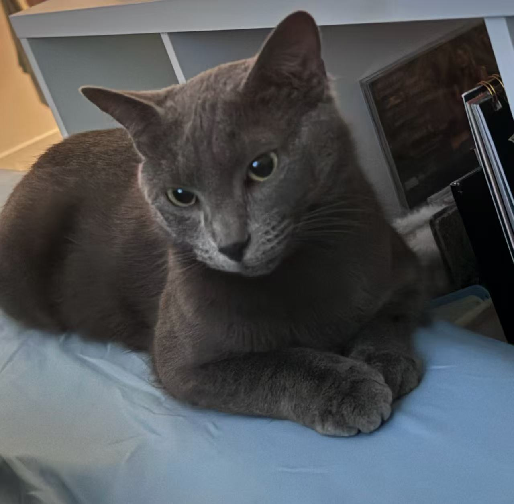
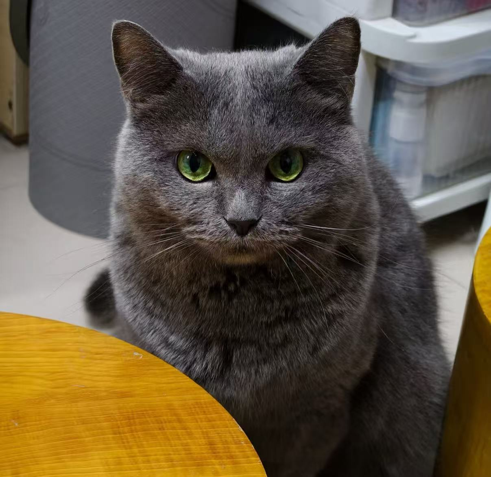
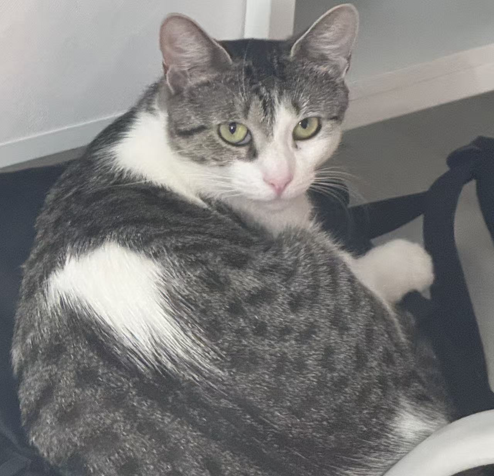
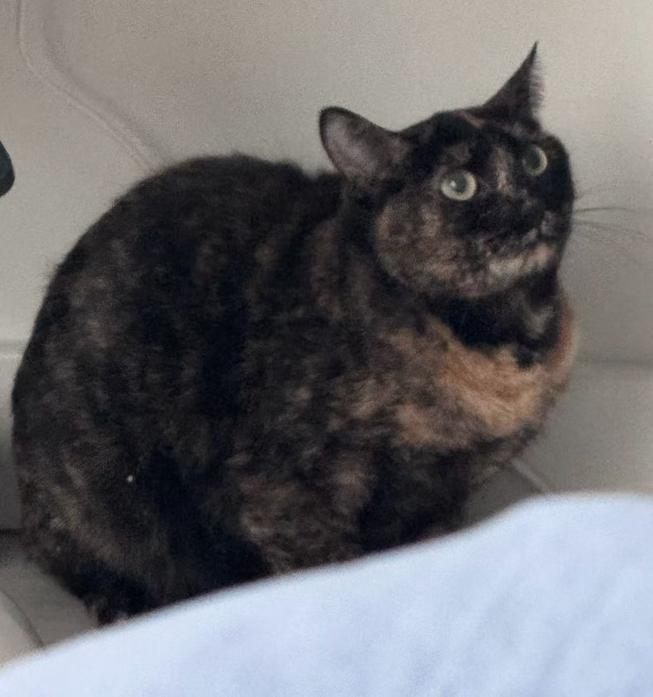
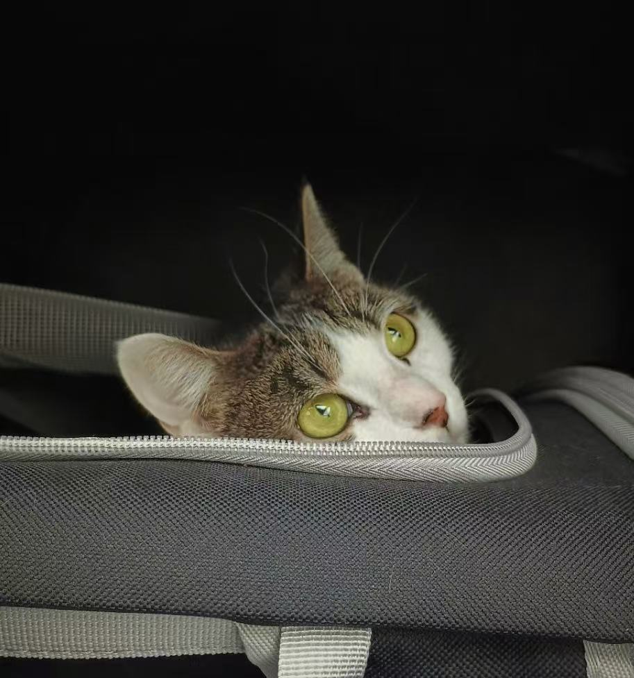
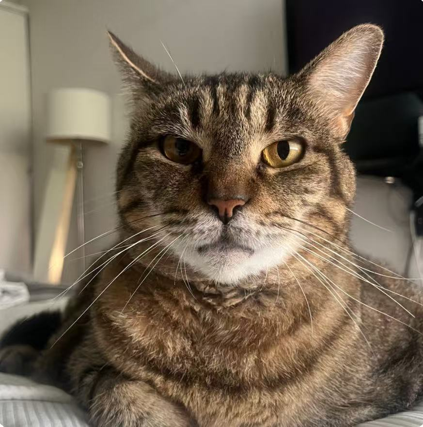
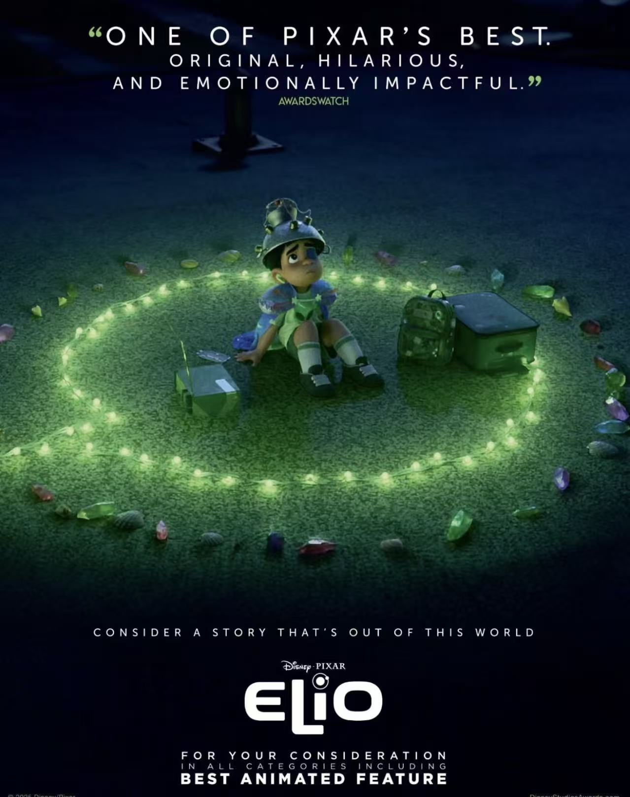
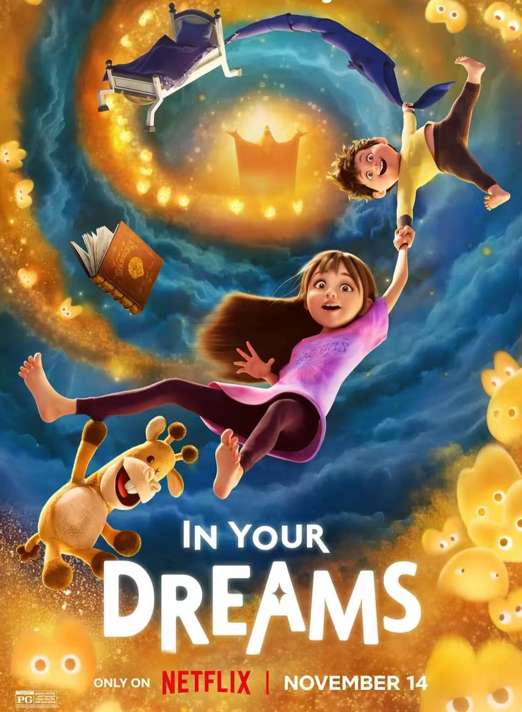
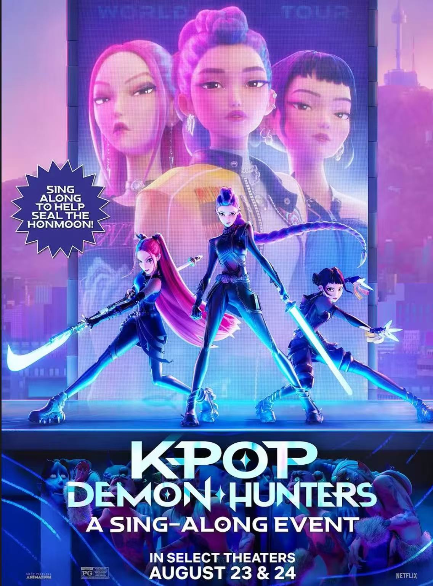
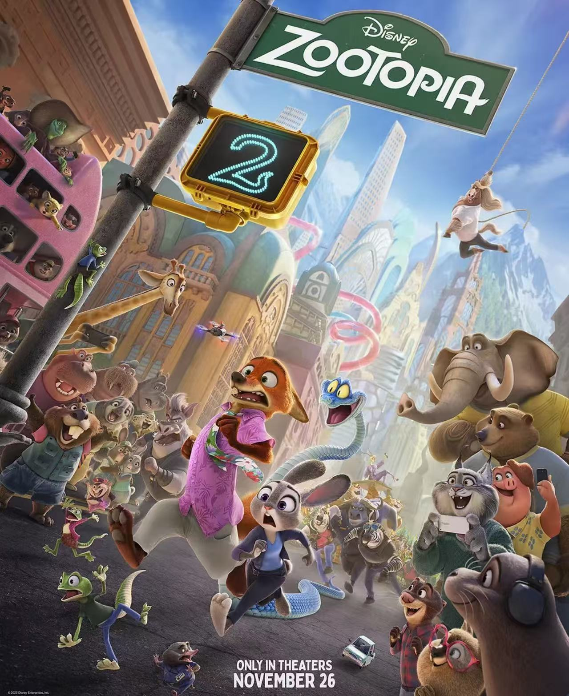
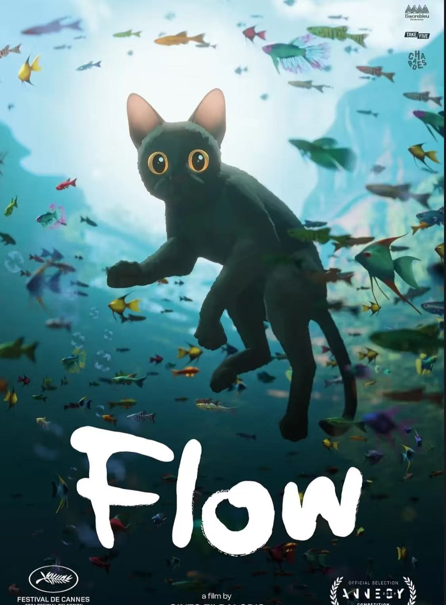